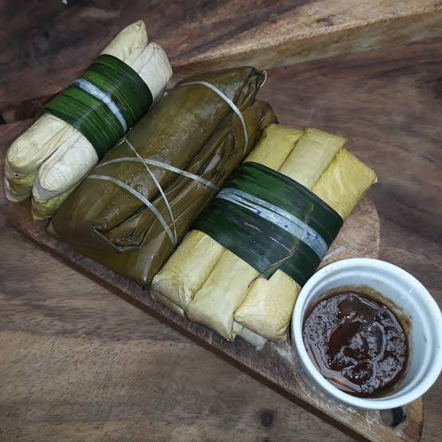
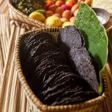

Pawa ti Piat Naimas a beloved Filipino delicacy from Piat, Cagayan Valley, is a steamed rice cake filled with peanuts and muscovado sugar, offering a delightful blend of chewy texture and sweet, nutty flavors.
Tupig
Tupig is a traditional Filipino rice cake from the northern Philippines, known for its chewy texture and sweet flavor, made with glutinous rice, coconut milk, sugar, and young coconut, wrapped in banana leaves and grilled over charcoal.

Suman Latik
Suman Latik (banana leaf-wrapped rice cake with caramelized coconut) is a staple dessert among Cagayanos. Each Suman latik becomes distinct because of the latik or the coconut caramel that serves as a topping or spread.

Gamet
Gamet is a seasonal seaweed like the Japanese nori that grows on sharp coral stones jutting along the craggy coastlines of Santa Praxedes. The seaweed grows in abundance during the colder months starting in November and ending March.